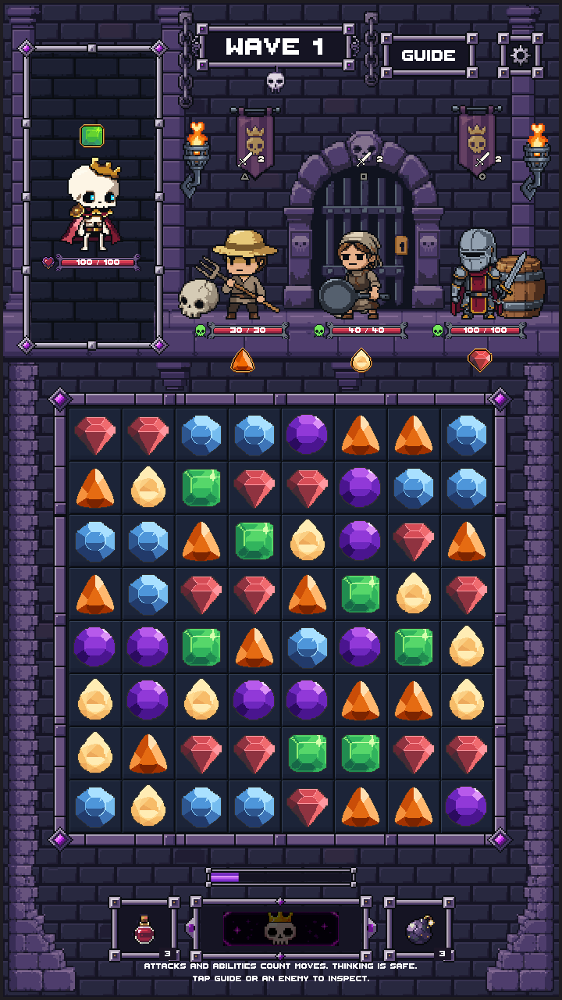
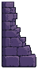
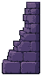
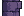
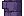
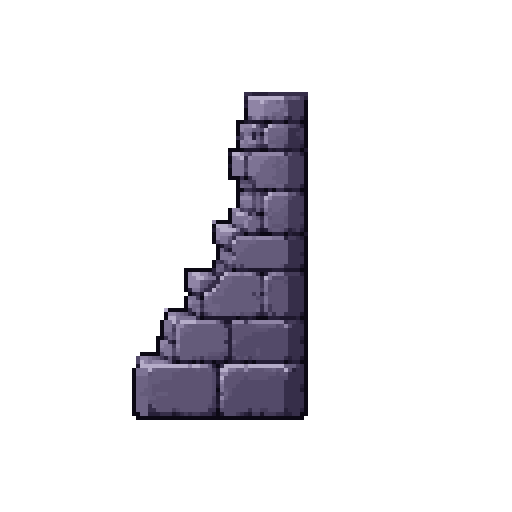
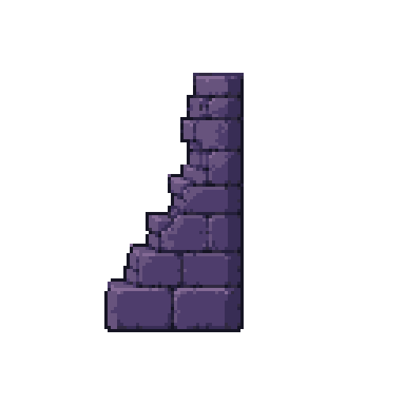

The portrait banner is removed. New masonry is a review candidate, shown in actual Unity combat through an editor-only preview. Its production binding remains unchanged. Nothing is merged.
Report · Current production preview · Draft PR #205

Masonry_Base_Left
48×86, 7 colors

Masonry_Base_Right
48×86, 7 colors

Masonry_Repeat_Left
24×16, 7 colors

Masonry_Repeat_Right
24×16, 7 colors



One generated stepped wall became a paired surround with inward-lit edges and repeatable upper stone courses. Exact source mask preserved; palette reduced from 12 to 7 dungeon stone colors. Four editable LibreSprite modules; 6 generations used.